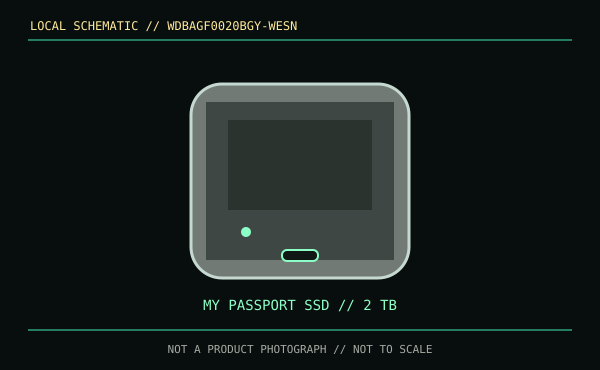

[ REMOVABLE MEDIA // MODEL-SPECIFIC RECORD ]
WD My Passport SSD 2 TB (WDBAGF0020BGY-WESN)
This SKU is a finished 2 TB WD portable solid-state drive in the grey My Passport enclosure, not a generic bare SSD or enclosure. It is distinct from other My Passport generations and capacity SKUs.

IDENTIFICATION: Read the entire WDBAGF0020BGY-WESN identifier; My Passport SSD names have been used across multiple hardware generations.
Format, capacity and compatibility
| Product / part ID | WD My Passport SSD, grey, 2 TB, WDBAGF0020BGY-WESN |
|---|---|
| Interface | USB 3.2 Gen 2, USB Type-C, backward compatible with supported earlier USB hosts. |
| Performance | Up to 1,050 MB/s read and 1,000 MB/s write per WD's published maximums. Host link, supplied cable, file pattern, thermal state and cache affect actual performance. |
| NAND / endurance | WD's cited consumer materials do not publish NAND type or a TBW value for this external SKU. |
| Compatibility | USB data connection required. WD lists Windows and macOS compatibility; filesystem reformatting may be required when moving between operating systems or appliances. Peak rate needs a USB 3.2 Gen 2 host. |
| Encryption / SKU caveat | WD lists password protection with 256-bit AES hardware encryption for this family. Preserve recovery credentials separately; encryption does not prevent device failure or data loss. |
Handling and preservation
Keep an independent backup before reformatting, retain the SKU and encryption recovery information, and safely eject before removal. Test capacity and checksums, then periodically restore a sample. Drop resistance and hardware encryption do not make the drive a durable single-copy archive.
Sources and standards
- WD — My Passport SSD product supportManufacturer product family and model options, including the 2 TB SKU.
- WD — My Passport SSD regional product supportManufacturer product documentation and technical support.
- USB-IF — USB 3.2 specifications overviewUSB interface reference.